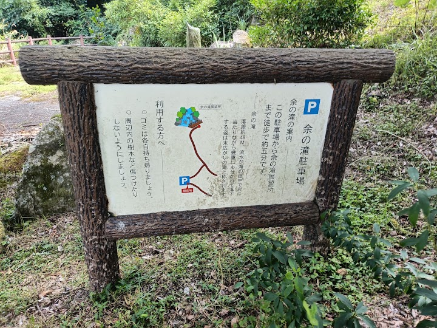
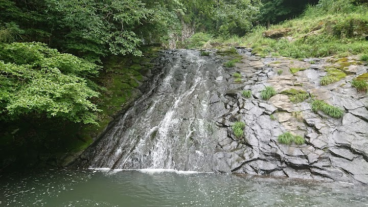
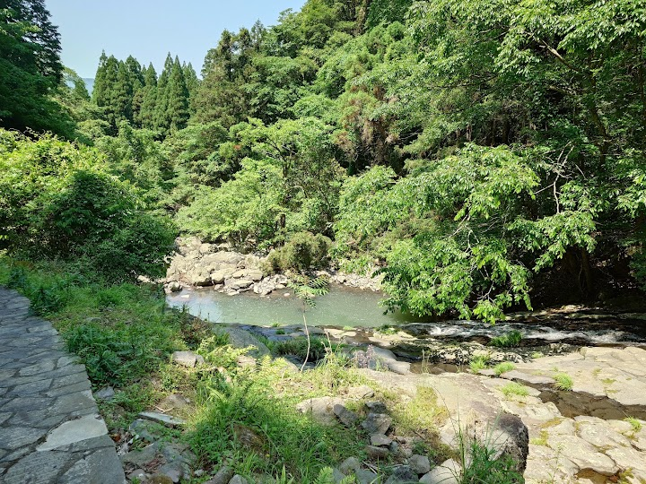
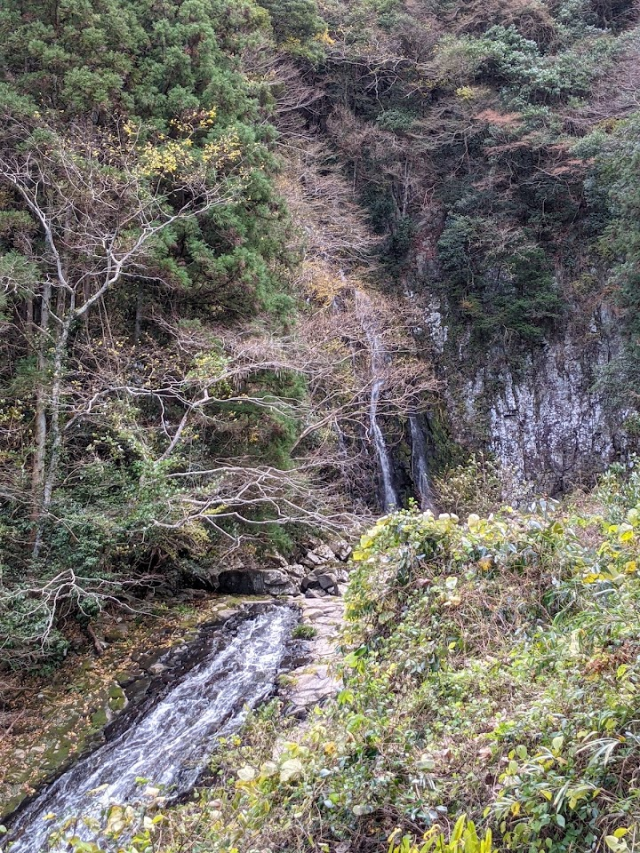
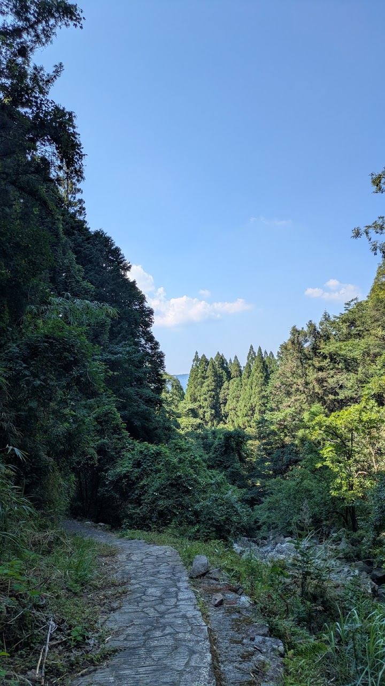

Amari Falls
A hidden waterfall in the wilderness of the Usa area. A visitor notes that the road to the car park is difficult and overgrown with weeds, so it needs care.
Open in Google Maps (street view, more photos and reviews there)






Visitor tips on finding it and getting there
It was a hidden gem in the wilderness. The road to the parking is little bit difficult with the overgrown weeds and grass. But you can get there after a careful driving of 5/6 minutes feom the main road. It is a short and easy walk from the parking to the waterfall. We went on a weekened but there was no one there but us. Peaceful environment and refreshing water. And there is onething to be careful of. There are lot of thorny shrubs on the both side of the roads.
The translation on this map is incorrect. The locals call these falls Amari Falls. If you are trying to find it ask for Amari-no-taki (Amari Falls) There are 5 parking spots. Parking and entrance is free. Please note that there are no toilets. The telephone number provided if for Usa City Hall Tourist and Branding Section. They can only be contacted on weekdays.
Stunning! A must visit place if in the area. It's not far at all from the parking lot and not a steep walk.